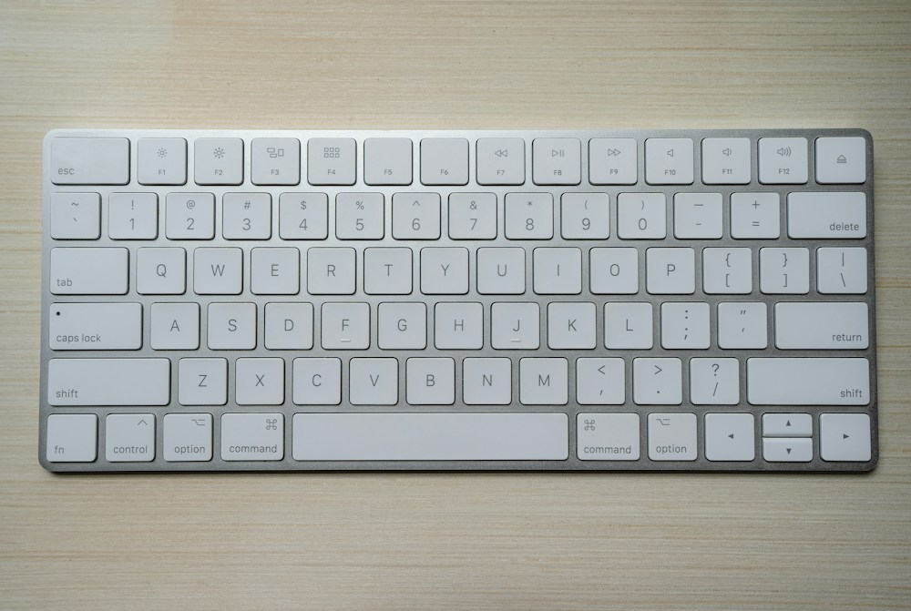

Equipa testa a navegação com teclado
Autor: Hugo Nunes · · Categoria: Acessibilidade
O jornal verifica se os conteúdos podem ser percorridos sem rato.

A redação fictícia do TechNews realizou uma sessão de navegação por teclado nas suas páginas de demonstração.
A equipa reviu os nomes das ligações, os textos alternativos das imagens e a associação entre labels e campos dos formulários.
O teste começa com a tecla Tab para percorrer os elementos interativos e Shift+Tab para regressar. A tecla Enter abre as ligações, enquanto a barra de espaços permite marcar as caixas de seleção dos formulários.